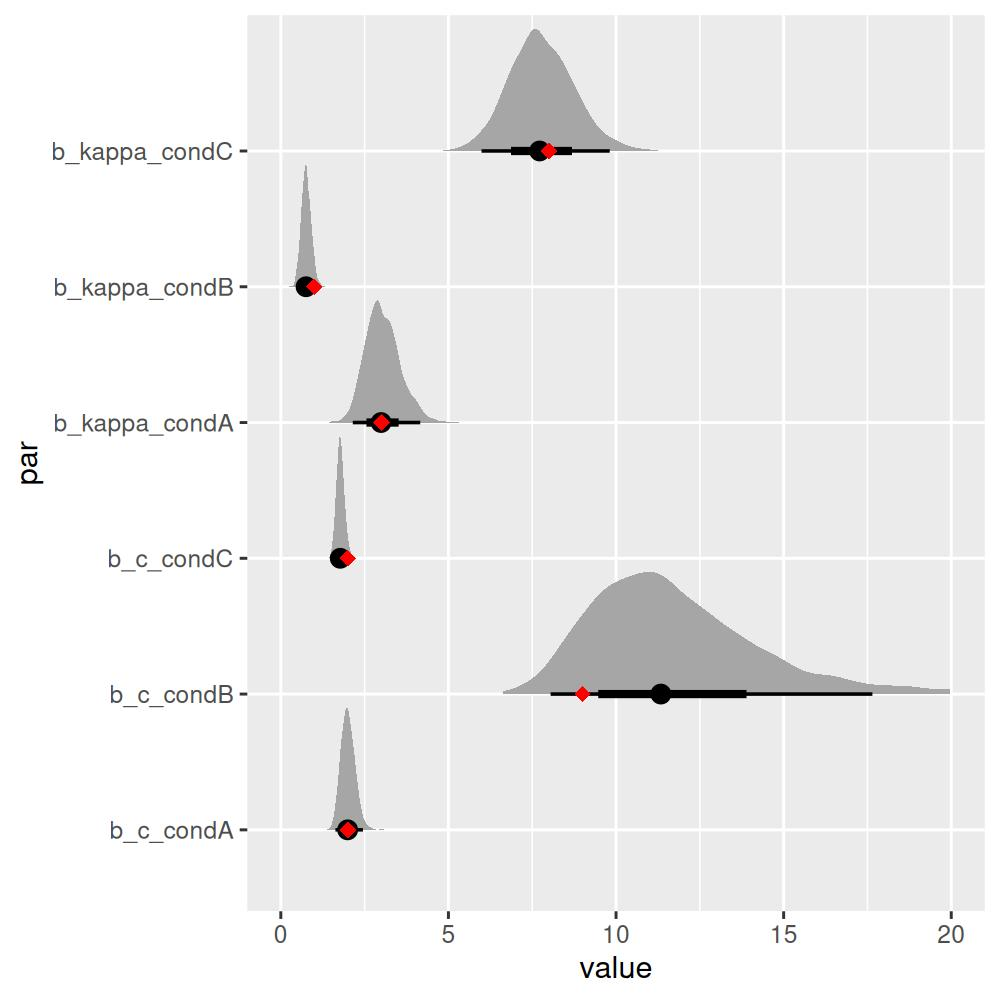
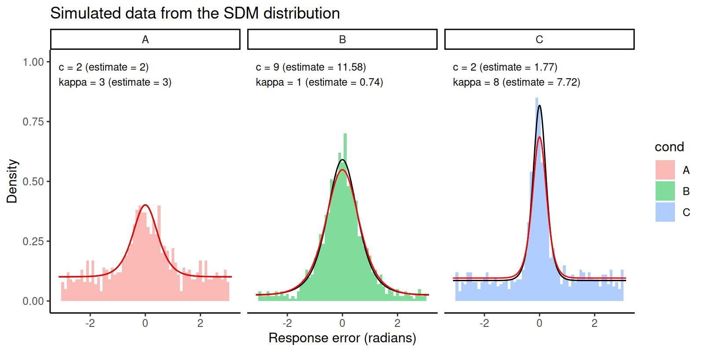

The Signal Discrimination Model (SDM)
Ven Popov
Gidon Frischkorn
Source:vignettes/bmm_sdm_simple.Rmd
bmm_sdm_simple.Rmd1 Introduction to the model
The Signal Discrimination Model is a measurement model for continuous reproduction tasks in the visual working memory domain. The model was originally introduced by Oberauer (2023). As other measurement models for continuous reproduction tasks, it’s goal is to model the distribution of angular response errors.
The model assumes that when a test probe appears, all possible responses on the circle (\(\theta\)) are activated with a strength that depends on the distance between the feature stored in memory (\(\mu\)) and the response options. Formally, this is given by the following activation function:
\[ S(\theta) = c \cdot \frac{\exp(\kappa \cdot \cos(y-\mu))}{2\pi I_0(\kappa)} \]
where \(c\) is the memory strength parameter, \(\kappa\) is the precision parameter, and \(I_0\) is the modified Bessel function of the first kind of order 0. Thus, the activation function follows a von Mises distribution, weigthed by a memory strength parameter.
The activation of response options is corrupted by noise, which is assumed to follow a Gumbel distribution. Then the response is the option with the highest activation value:
\[ Pr(\theta) = argmax(S(\theta) + \epsilon) \\ \epsilon \sim Gumbel(0,1) \] This is equivalent to the following softmax function (also known as the exponentiated Luce’s choice rule):
\[ Pr(\theta) = \frac{\exp(S(\theta)}{\sum_{i=1}^{n} \exp(S(\theta_i))} \] where n is the number of response options, most often 360 in typical visual working memory experiments.
In summary, the model assumes that response errors come from the following distribution, where \(\mu = 0\):
\[ \Large{f(\theta\ |\ \mu,c,\kappa) = \frac{e^ {c \ \frac{e^{k\ cos(\theta-\mu)}}{2\pi I_o(k)}}}{Z}} \] and Z is the normalizing constant to ensure that the probability mass sums to 1.
2 Parametrization in the bmm package
In the bmm package we use a different parametrization. The parametrization is chosen for numerical stability and efficiency. Three features of the parametrization above make it difficult to work with in practice. First, the modified bessel function \(I_0\) increases rapidly, often leading to numerical overflow. Second, the bessel function is expensive to compute, and estimating this model with MCMC methods can be slow. Third, the normalizing constant in the denominator requires summing 360 terms, which is also slow.
To address these issues, we use the following parametrization of the SDM distribution:
\[ \Large{f(\theta\ |\ \mu,c,\kappa) = \frac{ e^{c \ \sqrt{\frac{k}{2\pi}} e^{k \ (cos(\theta-\mu)-1)}} }{Z}} \]
This parametrization is derived from the known approximation of the modified bessel function for large \(k\) (Abramowitz, Stegun, and Romer (1988)):
\[ I_0(\kappa) \sim ~ \frac{e^{\kappa}}{\sqrt{2\pi \kappa}}, \ \ \ \ \kappa \rightarrow \infty \]
If needed, the \(c\) parameter of the original formulation by Oberauer (2023) can be computed by:
\[ c_{oberauer} = c_{bmm} \ e^{-\kappa} I_0(\kappa)\sqrt{2 \pi \kappa} \]
This parametrization does not change the predicted shape of the distribution, but it produces slightly different values of \(c\) for small values of \(kappa\). The parametrization is the default in the bmm package.
A second optimization concerns the calculation of the normalizing constant \(Z\). The original model assumed that responses can only be one of 360 discrete values, resulting in a probability mass function. In bmm we treat the response variable as continuous, which makes \(f(\theta)\) a probability density function. This means that we can calculate the normalizing constant \(Z\) by integrating \(f(\theta)\) over the entire circle:
\[ Z = \int_{-\pi}^{\pi} f(\theta) d\theta \]
This integral cannot be expressed in closed form, but it can be approximated using numerical integration methods. The results between the discrete and continuous formulations are nearly identical, for large number of response options (as in typical applications), but not when the number of response options is small, for example in 4-AFC tasks.
3 Fitting the model with bmm
Begin by loading the bmm package:
3.1 Generating simulated data
If you already have data you want to fit, you can skip this section. For the current illustration, we will generate some simulated data from equation (??) with known parameters. bmm provides density functions in typical R style, with the prefix d for density (dsdm), p for the cumulative distribution function (psdm), q for the quantile function (qsdm), and (rsdm) for generating random deviates. Here’s how to simulate data from the SDM distribution for three conditions:
# set seed for reproducibility
set.seed(123)
# define parameters:
cs <- c(2, 9, 2)
kappas <- c(3, 1, 8)
# simulate data from the model
y <- c(rsdm(n = 1000, mu=0, c = cs[1], kappa = kappas[1], parametrization = "sqrtexp"),
rsdm(n = 1000, mu=0, c = cs[2], kappa = kappas[2], parametrization = "sqrtexp"),
rsdm(n = 1000, mu=0, c = cs[3], kappa = kappas[3], parametrization = "sqrtexp"))
dat <- data.frame(y = y,
cond = factor(rep(c('A','B','C'), each=1000)))This gives us the following distribution of response errors, with lines overlaying the predicted density generated with dsdm:
# generate predicted SDM density:
dd <- data.frame(y = rep(seq(-pi, pi, length.out=1000),3),
cond = factor(rep(c('A','B','C'), each=1000)),
c = rep(cs, each=1000),
kappa = rep(kappas, each=1000))
dd$d <- dsdm(dd$y, mu=0, c=dd$c, kappa=dd$kappa, parametrization = "sqrtexp")
# prepare labels for plots
par_labels <- data.frame(cond = c('A','B','C'),
c = c(2, 9, 2),
kappa = c(3, 1, 8))
par_labels$label <- paste0('c = ', par_labels$c, '\nkappa = ', par_labels$kappa)
# plot the data and the predicted density
library(ggplot2)
ggplot(dat, aes(x=y, fill=cond)) +
geom_histogram(aes(y=..density..), binwidth = 0.1, position = "identity", alpha=0.5) +
theme_classic() +
facet_wrap(~cond) +
geom_line(data=dd, fun=dsdm, aes(y, d)) +
scale_x_continuous(limits = c(-pi, pi)) +
labs(title = "Simulated data from the SDM distribution",
x = "Response error (radians)",
y = "Density") +
geom_text(data=par_labels, aes(x=-pi, y=0.5, label=label), hjust=0, vjust=0, size=3)
3.2 Estimating the model with bmm
To estimate the parameters of the SDM distribution, we can use the fit_model() function. First, let’s specify the model formula. We want c and kappa to vary over conditions. The first two lines of the formula specify how the parameters vary over conditions. In this case, we want them to vary over the cond variable, so we use c ~ 0 + cond and kappa ~ 0 + cond:
ff <- bmf(
c ~ 0 + cond,
kappa ~ 0 + cond
)Then we specify the model, which in this case is just sdmSimple(), and we provide the name of the response error variable in the dataset:
model <- sdmSimple(resp_err = "y")Finally, we can fit the model. We strongly recommend using cmdstanr as a backend for fitting the SDM model, as it is much faster and more stable than the default rstan backend for this particular model. Here’s how to fit the model with cmdstanr:
fit <- fit_model(
formula = ff,
data = dat,
model = model,
parallel = T,
chains = 4,
init = 0.5,
iter = 2000,
backend='cmdstanr'
)The model takes about 30 seconds to fit after it is compiled.
We can now inspect the results of the model fit:
summary(fit) Model: sdmSimple(resp_err = "y")
Links: mu = tan_half; c = log; kappa = log
Formula: mu = 0
c ~ 0 + cond
kappa ~ 0 + cond
Data: dat (Number of observations: 3000)
Draws: 4 chains, each with iter = 2000; warmup = 1000; thin = 1;
total post-warmup draws = 4000
Regression Coefficients:
Estimate Est.Error l-95% CI u-95% CI Rhat Bulk_ESS Tail_ESS
c_condA 0.70 0.10 0.49 0.89 1.00 1940 2253
c_condB 2.44 0.21 2.08 2.89 1.00 1672 1747
c_condC 0.57 0.07 0.44 0.70 1.00 2249 2381
kappa_condA 1.09 0.16 0.77 1.40 1.00 1898 2126
kappa_condB -0.29 0.19 -0.70 0.06 1.00 1664 1594
kappa_condC 2.05 0.12 1.80 2.29 1.00 2208 2275
Constant Parameters:
Value
mu_Intercept 0.00
Draws were sampled using sampling(NUTS). For each parameter, Bulk_ESS
and Tail_ESS are effective sample size measures, and Rhat is the potential
scale reduction factor on split chains (at convergence, Rhat = 1).
We see that all Rhat values are less than 1.01, which is a good sign that the chains have converged. In principle you have to do more inspection, but let us see the estimated parameters. The model uses a log-link function for the c and kappa parameters, so we have to exponentiate the coefficients to get the estimated parameters:
exp(brms::fixef(fit)[2:7,1])
#> c_condA c_condB c_condC kappa_condA kappa_condB kappa_condC
#> 2.0039408 11.5301826 1.7710286 2.9742544 0.7468866 7.7552172which are close to the true values we used to simulate the data:
par_labels[,1:3]
#> cond c kappa
#> 1 A 2 3
#> 2 B 9 1
#> 3 C 2 8We can see that even though the estimated parameters are close, they are not exactly the same as the true parameters. To get a better picture, we can plot the estimated posterior distributions of the parameters:
library(tidybayes)
library(dplyr)
library(tidyr)
# extract the posterior draws
draws <- tidybayes::tidy_draws(fit)
draws <- select(draws, b_c_condA:b_kappa_condC)
# plot posterior with original parameters overlayed as diamonds
as.data.frame(draws) %>%
gather(par, value) %>%
mutate(value = exp(value)) %>%
ggplot(aes(value, par)) +
tidybayes::stat_halfeyeh(normalize = "groups") +
geom_point(data = data.frame(par = c('b_c_condA','b_c_condB','b_c_condC',
'b_kappa_condA','b_kappa_condB','b_kappa_condC'),
value = c(cs, kappas)),
aes(value,par), color = "red",
shape = "diamond", size = 2.5) +
scale_x_continuous(lim=c(0,20))
The true parameters all lie within the 50% credible intervals, which is a good sign that the model is able to recover the true parameters from the data.
As a final step, we can plot our data again, adding another line overlay with the density predicted by the estimated parameters:
# generate predicted SDM density:
ddest <- data.frame(y = rep(seq(-pi, pi, length.out=1000),3),
cond = factor(rep(c('A','B','C'), each=1000)),
c = rep(exp(brms::fixef(fit)[2:4,1]), each=1000),
kappa = rep(exp(brms::fixef(fit)[5:7,1]), each=1000))
# prepare labels for plots
par_labels <- data.frame(cond = c('A','B','C'),
c_est = exp(brms::fixef(fit)[2:4,1]),
kappa_est = exp(brms::fixef(fit)[5:7,1]),
c = c(2, 9, 2),
kappa = c(3, 1, 8))
par_labels$label <- paste0('c = ', par_labels$c, ' (estimate = ', round(par_labels$c_est,2), ')\n',
'kappa = ', par_labels$kappa, ' (estimate = ', round(par_labels$kappa_est,2), ')')
ddest$d <- dsdm(ddest$y, mu=0, c=ddest$c, kappa=ddest$kappa, parametrization = "sqrtexp")
# plot the data and the predicted density
ggplot(dat, aes(x=y, fill=cond)) +
geom_histogram(aes(y=..density..), binwidth = 0.1, position = "identity", alpha=0.5) +
theme_classic() +
facet_wrap(~cond) +
geom_line(data=dd, fun=dsdm, aes(y, d), color='black') +
geom_line(data=ddest, fun=dsdm, aes(y, d), color='red') +
scale_x_continuous(limits = c(-pi, pi)) +
labs(title = "Simulated data from the SDM distribution",
x = "Response error (radians)",
y = "Density") +
geom_text(data=par_labels, aes(x=-pi, y=0.9, label=label), hjust=0, vjust=0, size=3) +
scale_y_continuous(limits = c(0,1))
The histograms represent the data, the black lines represent the predicted density from the true parameters, and the red lines represent the predicted density from the estimated parameters. We can see that the estimated parameters are able to capture the main features of the data.